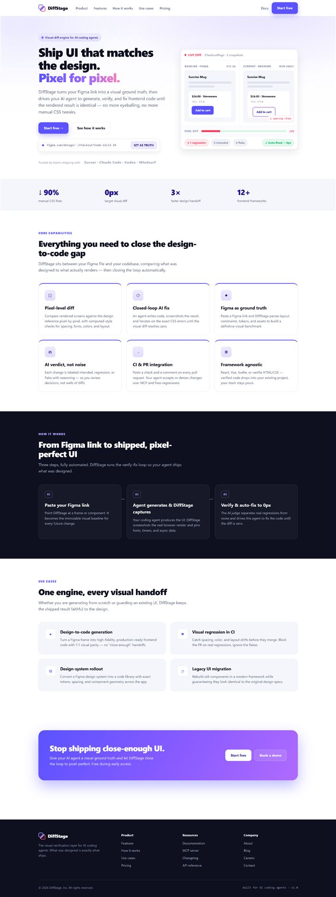
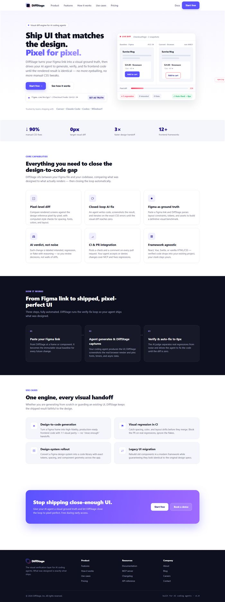
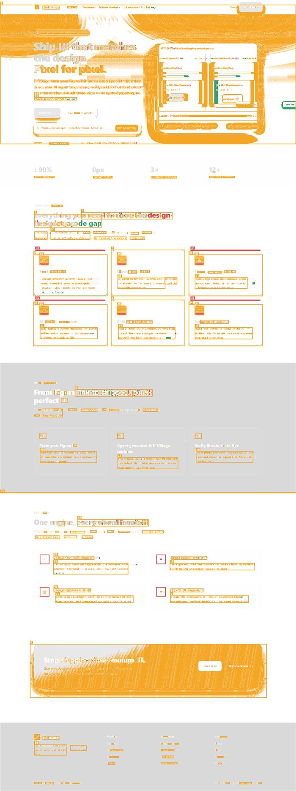
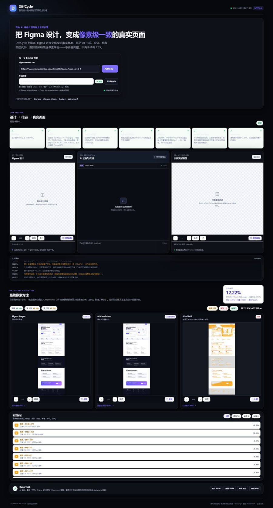
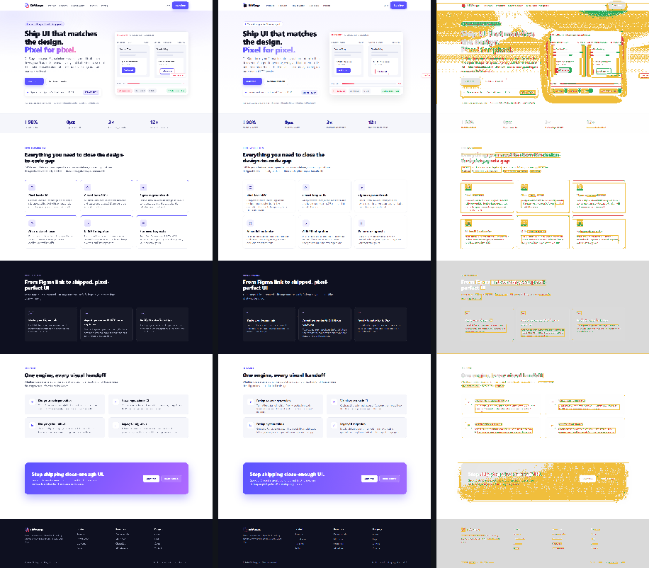

像素级 Diff
用真实浏览器渲染候选代码，与设计稿逐像素比对，差异像素按热区高亮标出，不靠肉眼估。
DiffCycle 连接 Figma 文件与代码库。粘贴一个 Figma 链接，它会读取设计稿、生成单文件静态页面（HTML + 内嵌 CSS）， 再用真实浏览器渲染结果与设计稿做像素级 Diff，并用语义化 AI 逐处修复，直到画面回到设计稿。 每一次修复都会重新校验，没收敛就再跑一轮——这是一条会自己闭合的差异闭环。
01.checkout-header {
02 display: flex;
03 gap: 24px;
04 padding: 16px 32px;
05 align-items: center;
06}
07
08// 示例：该属性与设计稿不符
09// 真实差异以下方实测指标为准DiffCycle 站在 Figma 文件与代码库之间，把「设计意图」和「真实渲染结果」并行映射，让两者之间的每一处偏差都可见、可归因、可修复。
用真实浏览器渲染候选代码，与设计稿逐像素比对，差异像素按热区高亮标出，不靠肉眼估。
模型读懂设计意图与差异热区，输出针对具体 CSS/布局问题的修复，而不是整页重写。
解析 Figma 的布局约束、文本与资源，生成带语义的结构描述，而不是把设计稿当成一张图。
与 Cursor、Claude Code、Codex、Windsurf 等主流 AI 编程工具协同，生成的代码自带视觉验收标准。
在 Pull Request 里自动跑视觉校验，把「设计一致性」变成流水线里的一道门禁。
识别设计系统中的组件与 token，生成的代码沿用既有规范，而不是每次另起一套。
左边是设计稿，中间是模型写出的代码，右边是渲染后与设计稿的像素差异。差异不是一段描述，而是一张能指到具体位置的图。
01.checkout-header {
02 display: flex;
03 gap: 24px;
04 padding: 16px 32px;
05 align-items: center;
06 border-bottom: 1px solid #1b2030;
07}
08
09// 示例注释
10// 示例注释我们把我们自己上一版官网首页（1440×3848）交给引擎：AI 写出单文件 HTML，Chromium 真实渲染，再与设计稿逐像素比对。下面是那次运行留下的原始产物。



上一次运行 · 1440×3848 整版
验收线 5%：严格差异占比不高于 5% 才算达标；判定用的是严格口径，不是「色差超 0.05」的占比。同一张首页（1440×3848）逐像素实测：严格差异占比 15.48%、人眼可见差异 2.58%、色差超 0.05 的占比 4.79%，共 162 处差异区域（19 新增 / 9 删除 / 134 修改）。这一轮自动修复没有一轮被采纳，所以我们不宣称「像素级还原」；但语义归因仍然完成 —— 每一处差异都被定位到具体区域与元素。你可以直接打开这次生成的页面

DiffCycle 以两种形态接入你的编码 Agent：MCP 工具面提供「量」的能力，写闸门（Hook）提供「不许含糊」的约束。 模型负责提议改法，DiffCycle 负责裁决——模型永远不能自己宣布完成。
先装，再说话。仓库 scripts/ 下每个宿主一个安装器，把同一份 MCP 服务定义与同一份行为契约写进它各自的配置格式：
幂等、改动前自动备份、不写入任何凭据值，动手前先 --dry-run 或 --check 预览。
node scripts/install-codex.mjs --target . 写 ~/.codex/config.toml 的 [mcp_servers.diffcycle] 段与仓库根 AGENTS.md。Codex 逐层向下读取 AGENTS.md，离当前目录越近的文件越优先。
node scripts/install-claude-code.mjs --target . 写项目级 .mcp.json、.claude/skills/ 与 .claude/agents/；首次连接需手动批准。装完用 /diffcycle 就能直接点名这个能力。
node scripts/install-cursor.mjs --target . 写 .cursor/mcp.json 与 .cursor/rules/*.mdc——Cursor 会忽略该目录下的普通 .md，所以规则用 .mdc。
VS Code 已支持 MCP Apps，是把 diff 视图直接画在对话里的最短路径；GitHub Copilot 是这套工具链里体量最大的 AI 编码工具。
node scripts/install-kiro.mjs --target . 写工作区自定义 Agent 与 PreToolUse 写闸门：改文件之前先测量，未达门槛直接阻断并回灌理由；MCP 服务端在 Kiro 设置里注册。
Gemini CLI、OpenCode、Roo Code、Zed、Windsurf / Devin Desktop 的 Cascade 都支持 MCP，只是配置文件各不一样：~/.gemini/settings.json、opencode.json、.roo/mcp.json、~/.config/zed/settings.json、~/.codeium/windsurf/mcp_config.json。
装完怎么开始？把这句话粘给你的 Agent：用 diffcycle_measure 量一下这个页面和设计稿的差异，把 diff 和 withinGate 给我。
Agent 在别处问过「哪里不一样」「跟设计稿对一下」也会自动用上——触发词是按用户真会说的话写的，不是按术语写的。
现在 measure 还会把「设计稿 | 实测渲染 | 差异热区」三联图直接放进对话里，差异一眼可见，不必自己去开 PNG。
完整的安装步骤、参数表、判定规则与故障排查，看文档。
先把边界说清楚：MCP Apps 是 MCP 的官方扩展机制，允许工具声明一个交互式 UI。扩展本身已经 production ready，ChatGPT、Claude、Goose、VS Code 都支持。DiffCycle 的 measure 工具目前 还没有接上这一层：它返回的是标准的 image content block（设计稿 | 实测渲染 | 差异热区），让差异在对话里直接看得见，但这不是 MCP Apps 声明出来的可交互 UI。
也把边界说清楚：写闸门覆盖 Claude Code、Codex 与 Kiro。Claude Code 与 Codex 按各自官方 Hook 文档接入（退出码 2 加 stderr 阻断），Kiro 用 PreToolUse 写闸门。判定逻辑只有一份，各宿主适配器只负责说清「哪些工具算写、路径在哪个字段」，所以几家的判定结果不会互相漂移。每个闸门都 fail-closed：找不到测量记录、解析不了输入、脚本崩溃，一律按拒绝写入处理。Codex 的多个 Hook 是并发启动的，一个拦不住另一个，所以每个闸门都得自己站得住。

每一步都有可以复核的中间产物：设计描述、代码、渲染截图、差异热区。复检不过，闭环就再转一圈。
粘贴 Figma 文件链接，DiffCycle 读取节点结构、布局约束与文本资源，生成可被模型消费的设计描述。
AI 写出单文件 HTML 与内嵌 CSS；DiffCycle 在真实浏览器中渲染候选结果并截图。
渲染结果与设计稿做像素级 Diff，差异按热区定位；模型读懂意图后做定点修复，再复检直到收敛。
不收敛就回到第 1 步。复检仍超出阈值时，差异热区带着语义归因重新进入修复，直到像素级一致才停下——这就是 DiffCycle：一条跑到收敛才停的差异闭环。
无论是设计稿刚交付，还是代码已经上线，DiffCycle 都让「设计」和「代码」保持同一份事实。
设计师在 Figma 完成设计，DiffCycle 直接产出可维护的代码，而不是一张切图或一段需要手改的 CSS。
在流水线里自动跑视觉校验，让「设计一致性」成为合并前的硬门禁，而不是上线后才发现。
以 Figma 设计系统为基准批量产出组件与页面，token、间距与组件结构与设计稿保持同源。
每次迭代都重新渲染并与设计稿比对，改动引入了视觉漂移就会立刻暴露在 PR 上。
产品仍在打磨期，个人与小团队可以免费使用完整能力。以下是已确定的形态，最终价格以正式发布为准。
给 AI 编码代理一份可验证的视觉基准，让它自己跑完生成、比对与修复的闭环。
站点目前托管在静态站上，表单没有后端在收。提交会打开 GitHub 的新建 issue 页面，你的邮箱只出现在那条 issue 里，站点不保存它。
当前试用版范围：单个 Figma Frame（链接需含 node-id）→ 单文件静态 HTML + 内嵌 CSS → 真实浏览器渲染与像素级 Diff → 语义化修复后复检，全程在本机运行，需自备 Figma Token 与支持视觉输入的模型。CI / PR 门禁与设计系统识别在路线图中。